A devastating earthquake (Richter scale – 7.9) hit Gujarat on 26th January 2001. The epicenter of the quake was located in Kutch district. It caused death of thousands of people, tens of thousands were injured, hundreds of thousands were rendered homeless and damage of billions of Rupees was done.
GCMMF formed a specific organization named "Amul Relief Trust" (ART) under the Chairmanship of Dr. V. Kurien in 2001 with a donation of Rs. 50 Millions for reconstruction of the school buildings damaged in the 2001 earthquake in the Kutch area.
The Trust reconstructed 6 schools damaged by the above earthquake at a cost of Rs. 41.1 millions in Kutch area. Four of these schools started re-functioning from the last two academic sessions and the other two schools from the current session.
A school reconstructed by Amul Relief Trust in the earthquake affected Ratadia Village in Mundra Taluka of Gujarat 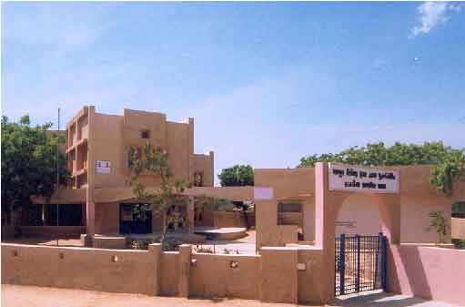 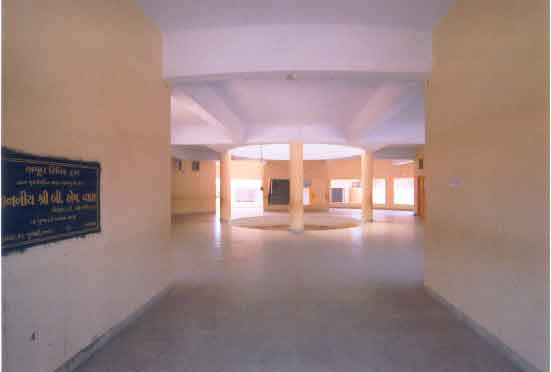
A school reconstructed by Amul Relief Trust in the earthquake affected Nana Asalia Village in Mundra Taluka of Gujarat 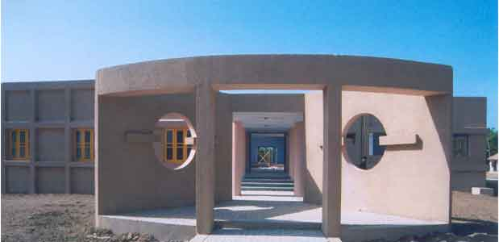 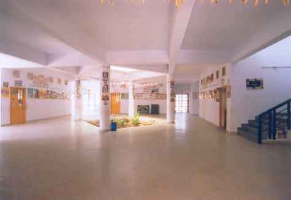
A school reconstructed by Amul Relief Trust in the earthquake affected Devpar Village in Mandvi Taluka of Gujarat 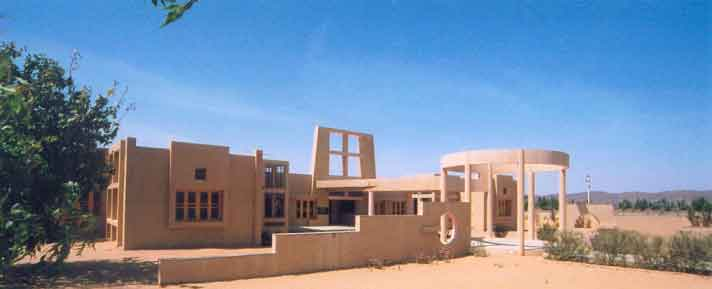 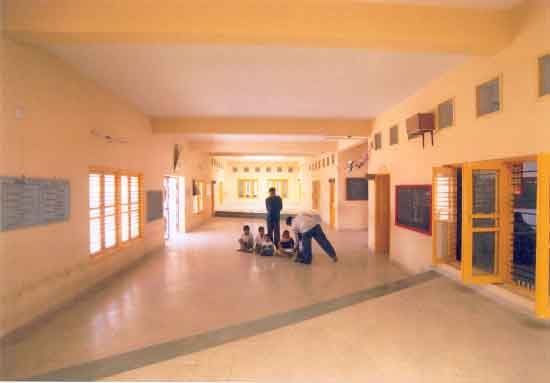
A school reconstructed by Amul Relief Trust in the earthquake affected Toda Village in Mundra Taluka of Gujarat 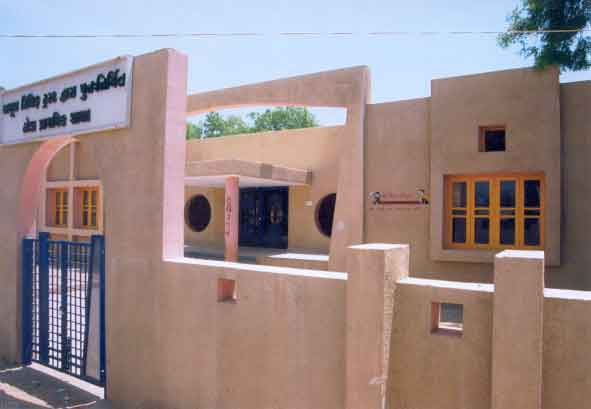 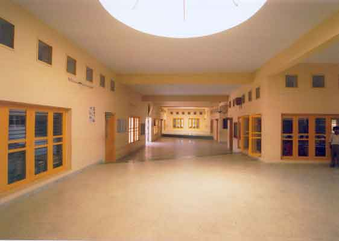
A school reconstructed by Amul Relief Trust in the earthquake affected Moti Bhadai Village in Mandvi Taluka of Gujarat 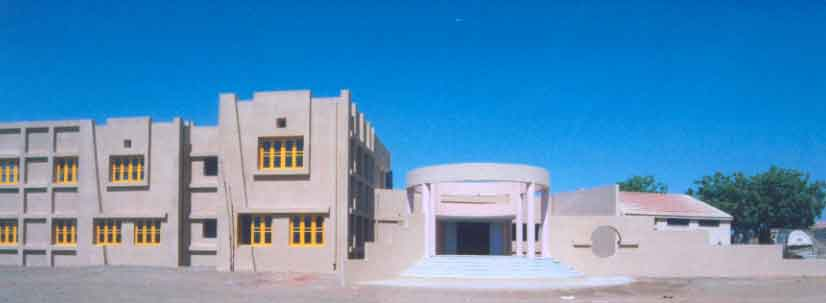 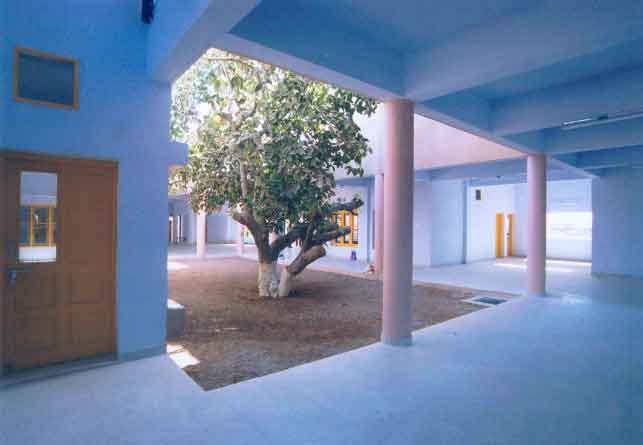
A school reconstructed by Amul Relief Trust in the earthquake affected Kathada Village in Mandvi Taluka of Gujarat 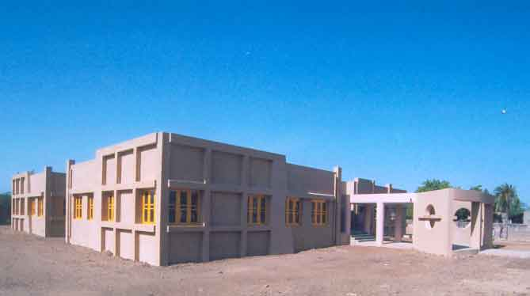
{kind=link}